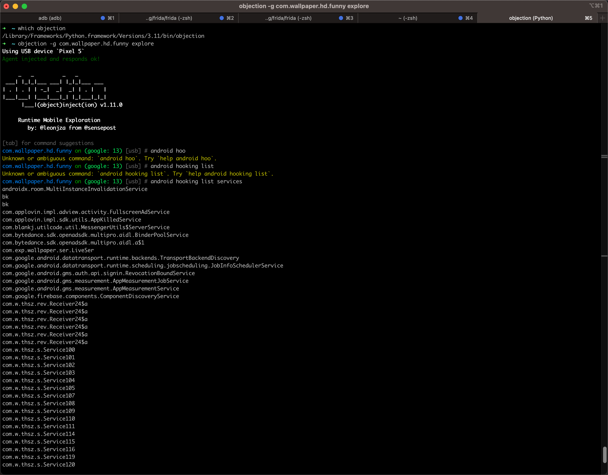
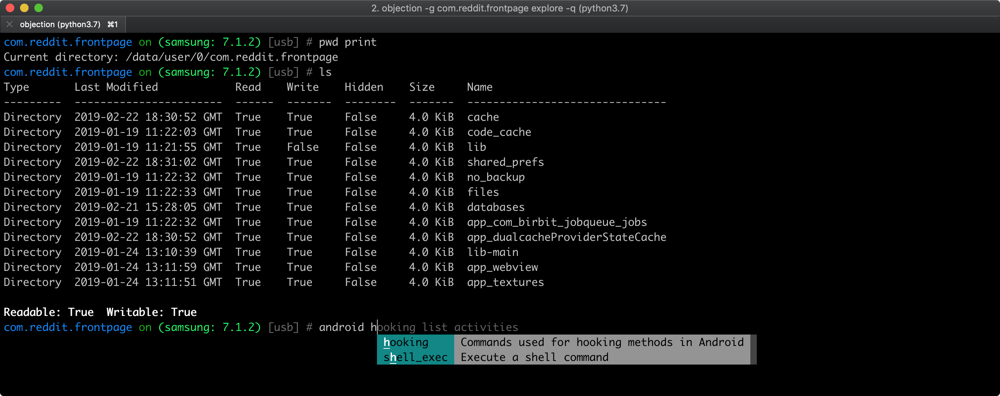

主页
1.1.
前言
1.2.
Objection概览
1.3.
Objection环境初始化
1.4.
通用逻辑
1.4.1.
查看子命令的参数
1.4.2.
hook函数的参数
1.5.
Objection调试Android
1.5.1.
android
1.5.1.1.
hooking
1.5.1.1.1.
list
1.5.1.1.1.1.
class_methods
1.5.1.1.1.2.
class_method
1.5.1.1.1.3.
services
1.5.1.1.1.4.
activities
1.5.1.1.1.5.
class_loaders
1.5.1.1.2.
watch
1.5.1.1.3.
search
1.5.1.2.
intent
1.5.1.2.1.
launch_activity
1.5.2.
memory
1.5.2.1.
search
1.5.2.2.
dump
1.6.
Objection调试iOS
1.7.
常见问题
1.7.1.
调试安卓
1.8.
附录
1.8.1.
Objection语法help
1.8.2.
Objection教程和资料
1.8.3.
参考资料
本书使用 HonKit 发布
Objection概览
Objection概览
Objection
是什么：底层依赖于
Frida
的移动端（Android和iOS）的hook调试工具
一句话概述：objection is a runtime mobile exploration toolkit, powered by Frida, built to help you assess the security posture of your mobile applications, without needing a jailbreak
功能=特点
支持iOS和Android
支持查看和修改移动端的文件系统内容
支持绕过SSL pinning=证书绑定（实现https抓包查看明文数据）
支持导出keychains
支持各种内存相关操作：dump导出、patching打补丁等
支持操作Heap堆
等等
Github
sensepost/objection: 📱 objection - runtime mobile exploration (github.com)
截图
hook调试安卓

A file system listing of the iOS applications main bundle
A file system listing of the Android applications bundle

results matching "
"
No results matching "
"